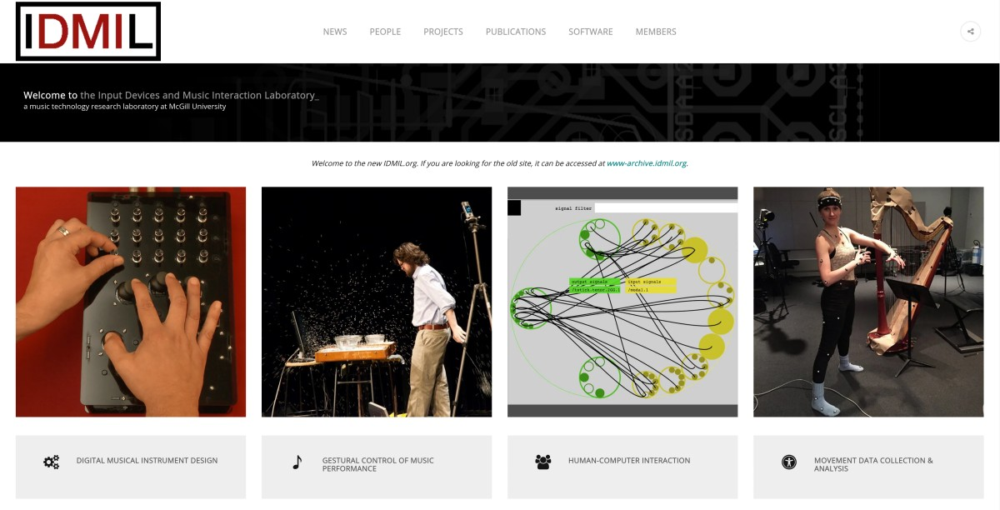
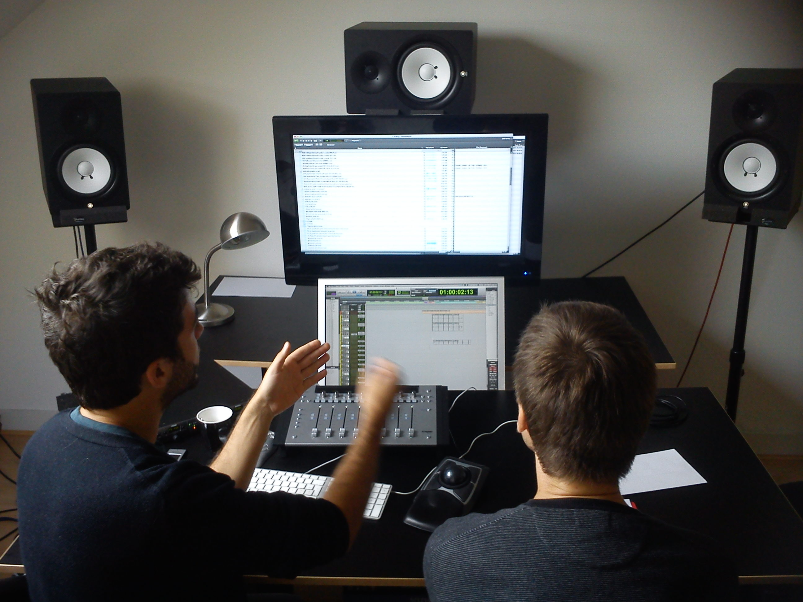
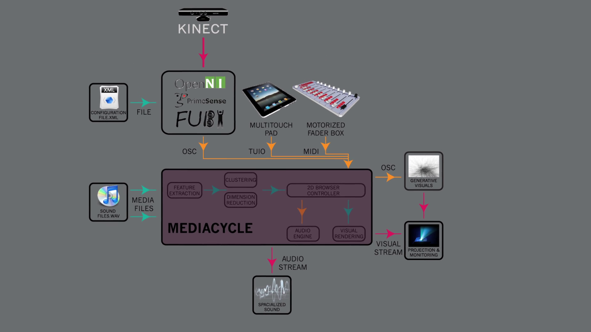
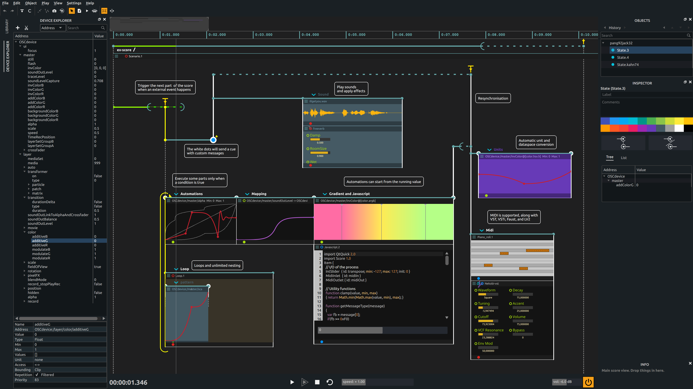

<!DOCTYPE html>
<html lang="en">
  <head>
    <meta charset="utf-8" />
    <meta name="robots" content="noindex">
    <meta name="viewport" content="width=device-width, initial-scale=1.0, maximum-scale=1.0, user-scalable=no" />

    <title>Navigation dans des collections multimedia: de la cartographie vers l'écriture.</title>
    <link rel="stylesheet" href="module/reveald3/demo/reveal.js/css/custom-gc.css" />
    <link rel="stylesheet" href="module/reveal.js-plugins/spreadsheet/spreadsheet.css">

    <link rel="stylesheet" href="./css/reveal.css" />
    <link rel="stylesheet" href="./css/theme/white.css" id="theme" />
    <link rel="stylesheet" href="./css/highlight/zenburn.css" />
    <link rel="stylesheet" href="./css/print/paper.css" type="text/css" media="print" />
    <link rel="stylesheet" href="./css/slides.css" />

  </head>
  <body>
    <div class="reveal">
      <div class="slides"><section  data-markdown><script type="text/template">

<!-- Use these links to change the theme at runtime: -->
<!-- TODO: style this as menu component or make sure it is ignored for deployment -->
<!-- <div class="themes"><div>
<a href="#" onclick="document.getElementById('theme').setAttribute('href','css/theme/black.css'); return false;">black</a>
<a href="#" onclick="document.getElementById('theme').setAttribute('href','css/theme/white.css'); return false;">white</a>
<a href="#" onclick="document.getElementById('theme').setAttribute('href','css/theme/league.css'); return false;">league</a>
<a href="#" onclick="document.getElementById('theme').setAttribute('href','css/theme/sky.css'); return false;">sky</a>
<a href="#" onclick="document.getElementById('theme').setAttribute('href','css/theme/beige.css'); return false;">beige</a>
<a href="#" onclick="document.getElementById('theme').setAttribute('href','css/theme/simple.css'); return false;">simple</a>
<a href="#" onclick="document.getElementById('theme').setAttribute('href','css/theme/serif.css'); return false;">serif</a>
<a href="#" onclick="document.getElementById('theme').setAttribute('href','css/theme/blood.css'); return false;">blood</a>
<a href="#" onclick="document.getElementById('theme').setAttribute('href','css/theme/night.css'); return false;">night</a>
<a href="#" onclick="document.getElementById('theme').setAttribute('href','css/theme/moon.css'); return false;">moon</a>
<a href="#" onclick="document.getElementById('theme').setAttribute('href','css/theme/solarized.css'); return false;">solarized</a>
</div> -->

<!-- Use this to add a background image: -->
<!-- .slide: id="start" data-background="images/projects/MashtaCycleThumbnail1060p.jpg" data-state="start"-->

<!-- Use this transparent styling in case of a background image: -->
<!-- <div class="title"> -->

## Navigation dans des collections multimedia

### de la cartographie vers l'écriture

<!-- </div>  -->

<div class="authors">
<div class="author">

<div class="name"><a href="https://frisson.re" title="Christian Frisson's Website">Christian Frisson</a></div>
</div>
</div>

<div class="affiliations">
<div class="affiliation">
<a class="logo" href="https://mcgill.ca" title="McGill University"></a>
<a class="logo" href="http://idmil.org" title="Input Devices and Music Interaction Lab"></a>
</div>
</div>

### Workshop IEA LaBRI-IDMIL

#### 2020-11-19

<aside class="notes"><ul>
<li>Bonjour, Hi. Je m&#39;apppelle Christian Frisson.</li>
<li>Je vais vous parler de navigation dans des collections multimedia: de la cartographie à l&#39;écriture.</li>
</ul>
</aside></script></section><section  data-markdown><script type="text/template">

## [IDMIL](http://www-new.idmil.org/)

<div class="figures">
<div class="figure">

<div class="cite"></div>
</div>
</div>

<aside class="notes"><ul>
<li>Je suis chercheur postdoctoral à l&#39;Université McGill, à l&#39;IDMIL (Input Devices and Music Interaction Lab).</li>
</ul>
</aside></script></section><section ><section data-markdown><script type="text/template">

## De la cartographie vers l'écriture

<div class="figures">
<div class="figure">

<div class="cite">Studios Dame Blanche , Bruxelles, Belgique, 2013<div>
</div>

<aside class="notes"><p>Voici 2 ingénieurs du son dans un studio de post-production. Dans cet espace de travail, il y a 2 écrans. Sur l&#39;écran du haut, un navigateur permet de choisir des sons à la carte. Sur l&#39;écran du bas, un séquenceur permet d&#39;écrire des séquences avec ces sons.</p>
</aside></script></section><section data-markdown><script type="text/template">

# De la cartographie

<div class="figures">
<div class="figure">

<div class="cite">Visualisations de collections de sons: AudioMetro [<a href="https://doi.org/10.5281/zenodo.1417245">ISMIR'14</a> + <a href="https://doi.org/10.1145/2636879.2636880">ACM AM'14</a>]</div>
</div>

<aside class="notes"><!-- * L'un des ingénieurs du son explique à l'autre sa méthode de travail, lors d'une enquête contextuelle.  -->
<ul>
<li>Nous avons collaboré pour concevoir des visualisations pour faciliter la navigation dans des collections de sons, parce que c&#39;est fastidieux avec des explorateurs de fichiers.</li>
<li>A gauche sont exposées 3 methodes exemplaires de présentation dans l&#39;explorateur de fichier Finder de macOS, de haut en bas: 1) Galerie ou CoverFlow, pour la présentation visuelle serielle rapide de jaquettes d&#39;albums de musique; 2) Icônes, en grille, et 3) Liste, avec métadonnées. </li>
<li>A droite, nous avons proposé 3 représentations, de haut en bas: 1) une grille de sons ordonnés alphabétiquement par nom de fichier, 2) cette même grille avec des icônes ou glyphes générés à partir de caractéristiques extraites des sons, et 3) ces glyphes positionés par réduction de dimension sur ces caractéristiques.</li>
<li>Cette mise en correspondance de caractéristiques extraites du son vers des variables visuelles (position, couleur, etc...) s&#39;appelle en anglais mapping, ici j&#39;ai traduit en un mot par cartographie.</li>
</ul>
</aside></script></section><section data-markdown><script type="text/template">

<!-- .slide: data-background-color="#999"-->

# De la cartographie

<div class="figures">
<div class="figure">

<div class="cite">MashtaCycle [<a href="https://doi.org/10.1007/978-3-319-03892-6_14">Springer INTETAIN'13 Springer LNCS</a>]</div>
</div>
</div>

<aside class="notes"><p>Et si on voulait naviguer dans ces cartes de sons autrement qu&#39;avec un clavier, une souris et un écran de bureau ou de studio? Par exemple, en déplaçant son corps à la place d&#39;un  pointeur. Et en faisant des gestes pour appliquer des effets aux sons. Voici une démonstration vidéo appliquant nos travaux dans une installation-performance.</p>
</aside></script></section><section data-markdown><script type="text/template">

<!-- .slide: id="MashtaCycleVideo" data-background-video="videos/MashtaCycleCut.mp4" data-state="MashtaCycleVideo" -->

<aside class="notes"><ul>
<li>Gauthier Keyarts improvise ici une séquence sonore en naviguant dans un espace physique mis en correspondance avec l&#39;espace numérique de sons organisés par leurs caractéristiques.</li>
<li>Des gestes dans l&#39;air (non pas ancillaires) communiquent éventuellement aux spectateurs un fort aspect scénique, mais notre improvisateur/performeur/navigateur n&#39;a pas de retour sur ses gestes tel qu&#39;il est possible avec avec un instrument tangible, physique.</li>
</ul>
</aside></script></section><section data-markdown><script type="text/template">

<!-- Use this to add a background image: -->
<!-- .slide: data-background="images/projects/2020-03-05-IDMIL-Haptic-Showroom.jpg" -->

<aside class="notes"><ul>
<li>A l&#39;IDMIL, je m&#39;intéressais à comment étendre la mise en correspondance des caractéristiques de sons, non seulement avec des variables visuelles pour la visualisation, mais aussi avec des variables tactiles pour l&#39;haptification, avec ce genre de dispositifs à retour d&#39;effort.</li>
<li>Pour expérimenter ces mises en correspondances, j&#39;ai détourné Freesound Explorer, parce que MediaCycle le cadriciel développé pour mes travaux précédents pendant mon doctorat n&#39;était pas opensource. Post-scriptum: nous travaillons à rendre MediaCycle opensource. Mais j&#39;aimerais profiter de l&#39;occasion pour montrer une idée des auteurs de Freesound Explorer que je trouve inspirante pour transitioner de la cartographie vers l&#39;écriture.</li>
</ul>
</aside></script></section><section data-markdown><script type="text/template">

<!-- .slide: data-background-color="#000" -->

# Vers l'écriture

<div class="figures">
<div class="figure">
 <video width="100%" height="auto" controls>
  <source alt="" src="videos/FreesoundExplorerFollowTheBass.mp4" type="video/mp4">
Your browser does not support the video tag.
</video> 
<div class="cite"><a href="https://github.com/ffont/freesound-explorer">Freesound Explorer</a> [<a href="http://eecs.qmul.ac.uk/~keno/20.pdf">WAC'17</a>] par Frederic Font &amp; Giuseppe Bandiera</div>
</div>
</div>

<aside class="notes"><ul>
<li>Freesound Explorer présente aussi des sons en cartes organisées par leurs caractéristiques. Dans cette video, je commencerai par parcourir avec mon pointeur un groupe de sons similaires, pour ensuite identifier des sons qui sont séquencés dans des chemins pré-établies, pré-écrits.</li>
</ul>
</aside></script></section><section data-markdown><script type="text/template">

<!-- .slide: data-background-color="#000" -->

# Vers l'écriture

<div class="figures">
<div class="figure">

<div class="cite">Jean-Michaël Celerier et contributeurs,  <a href="https://github.com/ossia/score">ossia score</a></div>
</div>
</div>

<aside class="notes"><ul>
<li>Ici une capture d&#39;écran d&#39;ossia, dont un composant pour la lecture de sons.</li>
<li>Je finis par une question ouverte: comment pourrait-on allier une navigation par des cartographies de sons avec une pré-écriture de séquences sonores ou multimedia?</li>
</ul>
</aside></script></section></section></div>
    </div>

    <script src="./js/reveal.js"></script>

    <script>
      function extend() {
        var target = {};
        for (var i = 0; i < arguments.length; i++) {
          var source = arguments[i];
          for (var key in source) {
            if (source.hasOwnProperty(key)) {
              if(Array.isArray(target[key])){
                target[key] = target[key].concat(source[key]);
              }
              else{
                target[key] = source[key];
              }
            }
          }
        }
        return target;
      }

      // Optional libraries used to extend on reveal.js
      var deps = [
        { src: './plugin/markdown/marked.js', condition: function() { return !!document.querySelector('[data-markdown]'); } },
        { src: './plugin/markdown/markdown.js', condition: function() { return !!document.querySelector('[data-markdown]'); } },
        { src: './plugin/highlight/highlight.js', async: true, callback: function() { hljs.initHighlightingOnLoad(); } },
        { src: './plugin/zoom-js/zoom.js', async: true },
        { src: './plugin/notes/notes.js', async: true },
        { src: './plugin/math/math.js', async: true },
        // { src: './module/reveal.js-plugins/chart/Chart.min.js' },				
	      // { src: './module/reveal.js-plugins/chart/csv2chart.js' }
      ];

      // default options to init reveal.js
      var defaultOptions = {
        controls: true,
        progress: true,
        history: true,
        center: true,
        transition: 'default', // none/fade/slide/convex/concave/zoom
        dependencies: deps,
        // chart: {
        //   defaults: {
        //     global: {
        //       title: { fontColor: "#FFF" },
        //       legend: {
        //         labels: { fontColor: "#FFF" },
        //       },
        //     },
        //     scale: {
        //       scaleLabel: { fontColor: "#FFF" },
        //       gridLines: { color: "#FFF", zeroLineColor: "#FFF" },
        //       ticks: { fontColor: "#FFF" },
        //     }
        //   },
        //   line: { borderColor: ["rgba(20,220,220,.8)", "rgba(220,120,120,.8)", "rgba(20,120,220,.8)"], "borderDash": [[5, 10], [0, 0]] },
        //   bar: { backgroundColor: ["rgba(20,220,220,.8)", "rgba(220,120,120,.8)", "rgba(20,120,220,.8)"] },
        //   pie: { backgroundColor: [["rgba(0,0,0,.8)", "rgba(220,20,20,.8)", "rgba(20,220,20,.8)", "rgba(220,220,20,.8)", "rgba(20,20,220,.8)"]] },
        //   radar: { borderColor: ["rgba(20,220,220,.8)", "rgba(220,120,120,.8)", "rgba(20,120,220,.8)"] },
        // }
        // spreadsheet: {
        //   // fontsize: 24,
        //   width: 150,
        //   delimiter: ",",
        //   precision: 4 // the maximum number of digits after the comma
        // },
      };

      // options from URL query string
      var queryOptions = Reveal.getQueryHash() || {};

      var options = extend(defaultOptions, {"transition":"none","slideNumber":"c/t","hashOneBasedIndex":true,"history":true,"margin":0.01,"controls":true,"progress":true,"dependencies":[{"src":"module/reveal.js-plugins/chart/Chart.min.js"},{"src":"module/reveal.js-plugins/chart/csv2chart.js"},{"src":"module/reveald3/reveald3.js"},{"src":"module/reveal.js-plugins/spreadsheet/ruleJS.all.full.min.js"},{"src":"module/reveal.js-plugins/spreadsheet/spreadsheet.js"}]}, queryOptions);
    </script>


    <script>
      Reveal.initialize(options);
    </script>
  </body>
</html>
